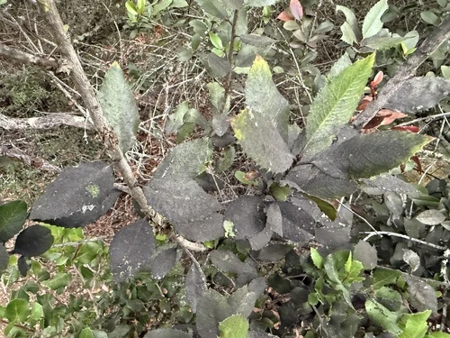

Sooty mold
A removable sooty coating
This is one possible explanation. Compare the signs below with those on your plant.

What to look for
Wipe a small area and inspect the foliage above for sticky honeydew or scale insects.
Possible causes and next steps
Sooty mold often grows on honeydew. Identify the sap-feeding insect and gently wipe washable foliage.
How to tell similar problems apart
A black film that wipes off and overlies sticky residue suggests sooty growth. A dark lesion inside the leaf will not wipe away.
What to do now
Trace sticky drips upward. Inspect the foliage directly overhead for sap-feeding insects before cleaning a small test area.
What to check next
If sticky droplets return to cleaned foliage, check the overhead source again even if the black film has yet to regrow.